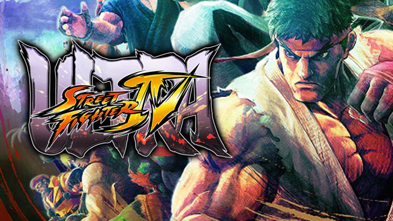

Street Fighter 4
imagem do jogo Street fighter 4
Street Fighter IV é um jogo de luta publicado pela Capcomァ, que também co-desenvolveu o jogo com Dimps. Foi a primeira entrada principal original da série desde Street Fighter III em 1997, um hiato de onze anos.A versão de jogo arcade operada por moedas foi lançada no Japão em 18 de julho de 2008, com arcades norte-americanos importando as máquinas em agosto. As versões do console para PlayStation 3 e Xbox 360 foram lançadas no Japão em 12 de fevereiro de 2009, e foram vendidas em lojas norte-americanas já em 16 de fevereiro, com uma data de lançamento prevista para 18 de fevereiro. O lançamento oficial europeu foi em 20 de fevereiro. [1] Uma versão do Microsoft Windows foi lançada em 2 de julho de 2009, no Japão, em 3 de julho de 2009 na Europa[4] e 7 de julho de 2009, nos Estados Unidos. [5] Uma versão para iOS foi lançada em 10 de março de 2010. [6] Além disso, uma versão para Android foi lançada, inicialmente como uma exclusiva para certos dispositivos LG. Então, até 31 de dezembro de 2012, a exclusividade expirou e o jogo foi disponibilizado para todos os dispositivos Android na Play Store, com uma restrição de região que o disponibiliza apenas no Japão. [10] Uma versão atualizada, Super Street Fighter IV, foi lançada como um título independente em abril de 2010. [11]
Após seu lançamento, o jogo recebeu aclamação universal da crítica; recebendo pontuações universalmente altas de muitos sites de jogos e revistas. Foi seguido por Super Street Fighter IV e Arcade Edition em 2010, 3D Edition em 2011 e Ultra Street Fighter IV em 2014. Todas as versões de Street Fighter IV venderam mais de 9 milhões de unidades em todas as plataformas.
O jogo, sem dúvida, tem uma sensação semelhante ao Super Street Fighter II Turbo, mas também inclui algumas características de Street Fighter III: 3rd Strike. [13] Como em Street Fighter III, o arremesso é realizado pressionando ambos os botões de ataque leve, enquanto pressionar ambos os botões de ataque pesados executa a ação pessoal ou provocação do personagem. Pressionar ambos os botões de ataque médio executa o Ataque de Foco de um personagem. Traços e posição rápida também estão no jogo. C. Viper e Dan (com a provocação no ar) são os únicos personagens que podem realizar um salto em altura. [13]
Era a intenção de que rodadas bônus, como a fase de quebra de carro dos jogos anteriores de Street Fighter, retornariam. Ono mais tarde afirmou que as etapas de bônus não estariam no jogo de arcade, citando a razão para ser que o tempo que os jogadores gastam em estágios bônus é o tempo durante o qual eles não têm nenhuma chance de perder, o que acaba por tirar dinheiro dos operadores de fliperama. [14][15] As etapas bônus foram adicionadas mais tarde em Super Street Fighter IV. Há também Batalhas Rivais que têm uma cutscene entre dois personagens (que depende de quem eles são) antes da batalha começar.
Focus Attacks, conhecido como Saving Attack na versão japonesa, é um novo sistema introduzido no Street Fighter IV. O Focus Attack é um movimento que permite ao jogador absorver um ataque e lançar um contra-ataque, e é realizado pressionando os botões médios de soco e chute médio simultaneamente. Há duas fases para o ataque. Na primeira fase, o jogador mudará para uma nova postura, momento em que poderá absorver um único golpe do oponente. A segunda fase é o contra-ataque. Quanto mais tempo o jogador segurar os botões médios de soco e chute, mais poderoso será o ataque. Se os botões forem mantidos por tempo suficiente, o ataque será desbloqueável e fará com que o oponente se despreça lentamente no chão, permitindo que o jogador siga com um golpe livre. Ataques que foram absorvidos durante a primeira fase de um Ataque de Foco ainda causam danos ao jogador; no entanto, a vida perdida do ataque do oponente será rapidamente regenerada depois. Além disso, durante a primeira fase do Focus Attack, o jogador pode executar um traço para frente ou para trás para cancelar o Ataque de Foco. Finalmente, ao custo de duas barras do medidor Super Combo, muitos Movimentos Especiais podem ser cancelados em um Ataque de Foco.